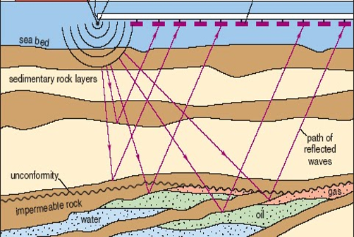
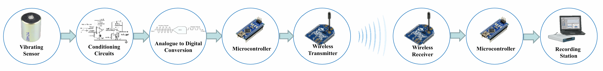
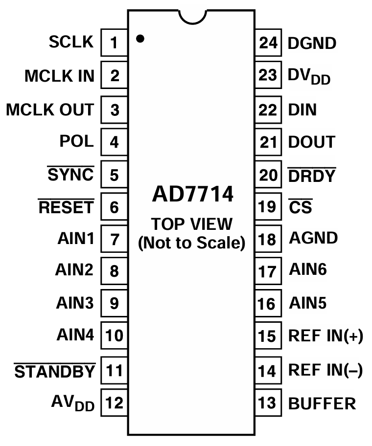
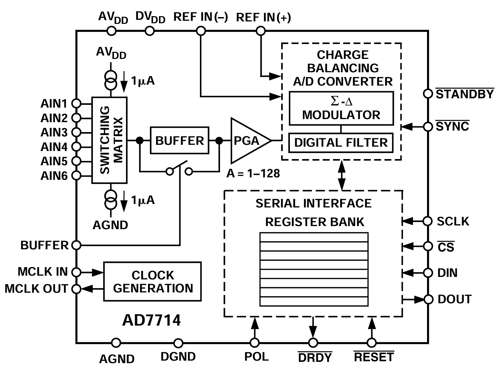
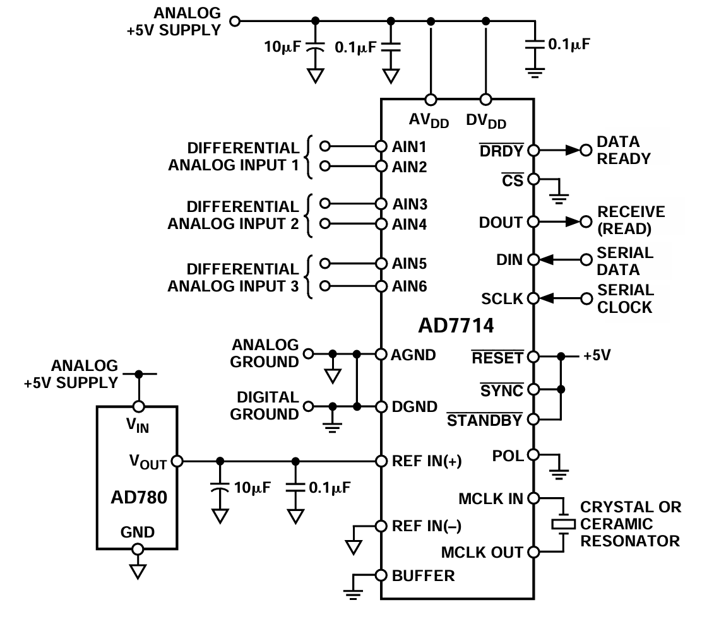
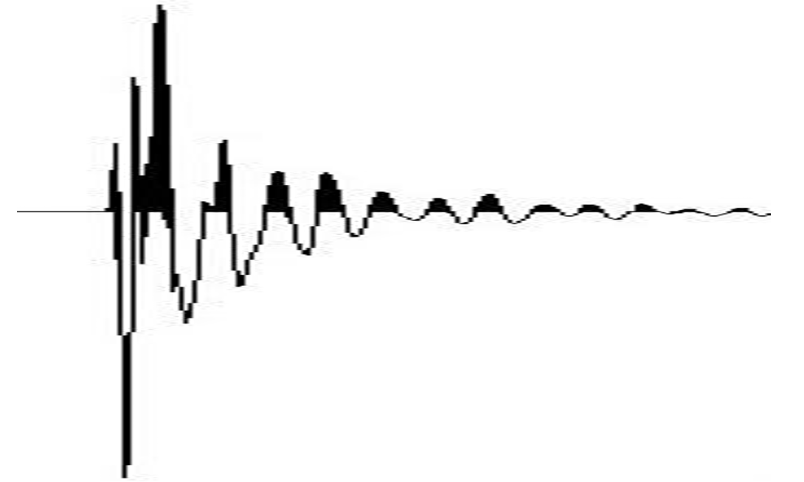
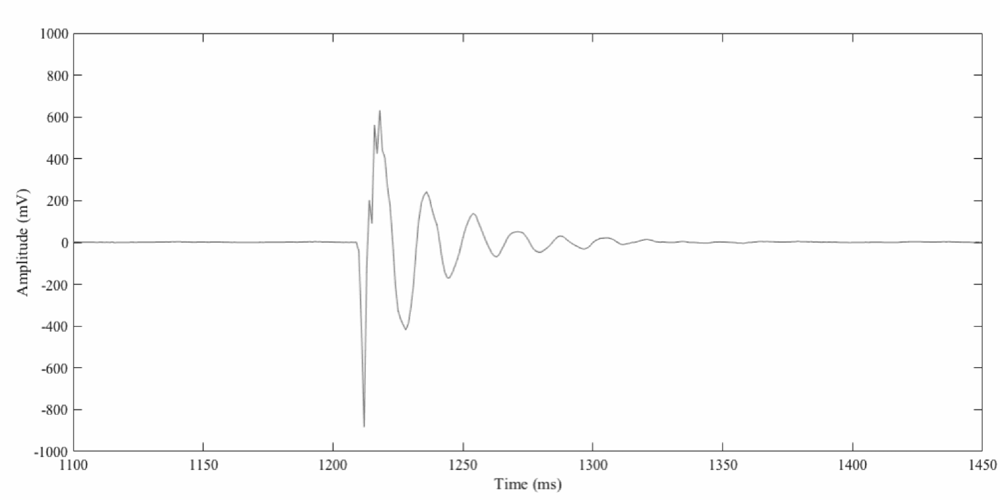

Wireless Seismic Data Acquisition System
Best Senior Project Award, Senior Expo Day, KFUPM, 2019
Overview
This project presents a wireless seismic data acquisition system designed for geophysical surveys. Traditional surveys use thousands of cabled sensors, which are costly and cumbersome. This demo replaces these with wireless nodes using coil-based geophone sensors.

Features
- Coil-based seismic sensors
- Signal conditioning circuit (gain control, anti-aliasing filter)
- Delta-Sigma ADC (24-bit, 2 ms sampling)
- Microcontroller (ATmega328P via Arduino Nano)
- Zigbee-based wireless transmission (XBee S2C)

Sensor Model
The analog front-end uses a geophone sensor to capture seismic vibrations where a permanent magnet remains stationary while a coil moves in response to ground motion. By Faraday's Law of induction, the induced voltage in the coil is proportional to the relative velocity between the coil and the magnet:
\[ v_g(t) \propto \frac{dx(t)}{dt} \]
The mechanical system can be modeled as a damped harmonic oscillator. Let \( x(t) \) be the displacement of the coil relative to the magnet, and \( u(t) \) be the ground displacement. The governing differential equation is:
\[ \frac{d^2x}{dt^2} + 2\lambda \omega_0 \frac{dx}{dt} + \omega_0^2 x = \frac{d^2u}{dt^2} \]
Taking the Laplace transform and solving for the transfer functions yields:
\[ H_{\text{displacement}}(s) = A \cdot \frac{s^3}{s^2 + 2\lambda \omega_0 s + \omega_0^2} \] \[ H_{\text{velocity}}(s) = A \cdot \frac{s^2}{s^2 + 2\lambda \omega_0 s + \omega_0^2} \] \[ H_{\text{acceleration}}(s) = A \cdot \frac{s}{s^2 + 2\lambda \omega_0 s + \omega_0^2} \]
Because the velocity transfer function has the same order in both numerator and denominator, it gives a flat frequency response at high frequencies, meaning the output voltage remains proportional to the input velocity. This characteristic allows the sensor to reliably act as a velocity transducer in seismic applications.
Signal Conditioning ADC (24-Bit Sigma-Delta)
The analog signal was digitized using the AD7714 from Analog Devices, a 24-bit Σ-Δ ADC optimized for precision measurement. It was chosen for its high resolution, low power consumption (~15 μW in standby), built-in programmable gain amplifier (PGA), and integrated digital filtering. The chip supports fully differential inputs and is configured through an SPI interface. Arduino Nano was used to program the ADC registers and handle serial communication after extensive testing to establish a working SPI protocol.
The AD7714 was set up with a fully differential input (AIN1–AIN6), 2 ms sampling interval (500 Hz), and self-calibration on startup. Internally, it includes a Σ-Δ modulator, PGA (gain 1–128), digital filter, and register bank. These features makes it highly suitable for low-frequency, high-accuracy applications like seismic signal acquisition.



Verification Results
A hammer impulse was applied and captured by both this prototype and a benchmark system. The received signals show successful acquisition and transmission up to 50 meters.

